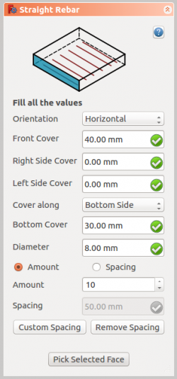

Arch Rebar Straight |
| Menu location |
|---|
| Arch → Rebar tools |
| Workbenches |
| Arch |
| Default shortcut |
| None |
| See also |
| UShape Rebar |
| This command is part of the Reinforcement AddOn, that you can install via menu Tools → Addons Manager |
{kind=link}
Description
The  Straight Rebar tool allows user to create a straight reinforcing bar in the structural element.
Straight Rebar tool allows user to create a straight reinforcing bar in the structural element.
{kind=link}
How to use
- Create a structure element
- Select any face of the structure
- Then select
 Straight Rebar from the rebar tools
Straight Rebar from the rebar tools - A task panel will pop-out on the left side of the screen as shown below 
- Select the desired orientation
- Give the inputs like front cover, right side cover, left side cover, bottom cover and diameter of the rebar
- Select the mode of distribution either amount or spacing
- If spacing is selected, a user can also opt for custom spacing
- Pick selected face is used to verify or change the face for rebar distribution
- Click OK or Apply to generate the rebars
- Click Cancel to exit the task panel
{kind=link}
Properties
- DATAOrientation: It decides the orientation of the rebar (like a bottom, top, right and left).
- DATAFront Cover: The distance between rebar and selected face.
- DATARight Cover: The distance between the right end of the rebar to right face of the structure.
- DATALeft Cover: The distance between the left end of the rebar to the left face of the structure.
- DATACover along: These property facilities the user to specify either top or bottom cover.
- DATABottom Cover: The distance between rebar from the bottom face of the structure.
- DATATop Cover: The distance between rebar from the top face of the structure.
- DATAAmount: The amount of rebars.
- DATASpacing: The distance between the axes of each bar.
Scripting
The  Straight Rebar tool can by used in macros and from the python console by using the following function:
Straight Rebar tool can by used in macros and from the python console by using the following function:
1. When orientation of straight rebar is horizontal:
makeStraightRebar(FrontCover, CoverAlong, RightCover, LeftCover, Diameter, AmountSpacingCheck, AmountSpacingValue, Orientation = "Horizontal", Structure, Facename)
Note:
- Type of CoverAlong argument is a tuple. Syntax: (<Along>, <Value>). Here we have horizontal orientation so we can pass Top Side and Bottom Side to <Along> arguments.
For eg. ("Top Side", 20) and ("Bottom Side", 20)
2. When orientation of straight rebar is vertical:
makeStraightRebar(FrontCover, CoverAlong, TopCover, BottomCover, Diameter, AmountSpacingCheck, AmountSpacingValue, Orientation = "Horizontal", Structure, Facename)
Note:
- Type of CoverAlong argument is a tuple. Syntax: (<Along>, <Value>). Here we have vertical orientation so we can pass Left Side and Right Side to <Along> arguments.
For eg. ("Left Side", 20) and ("Right Side", 20)
- Adds a Straight reinforcing bar object to the given structural object.
- If no Structure and Facename is given, it will take user selected face as input.
- Here CoverAlong argument is having type tuple.
- Returns the new Rebar object.
Example: Creating Straight rebar.
import Arch, StraightRebar
structure = Arch.makeStructure(length=1000.0, width=1000.0, height=400.0)
structure.ViewObject.Transparency = 80
FreeCAD.ActiveDocument.recompute()
rebar = StraightRebar.makeStraightRebar(20, ("Bottom Side", 20), 20, 20, 8, True, 10, "Horizontal", structure, "Face1")
Changing properties of Straight rebar.
import StraightRebar
StraightRebar.editStraightRebar(rebar, 25, ("Top Side", 20), 20, 20, 8, True, 10, "Horizontal")